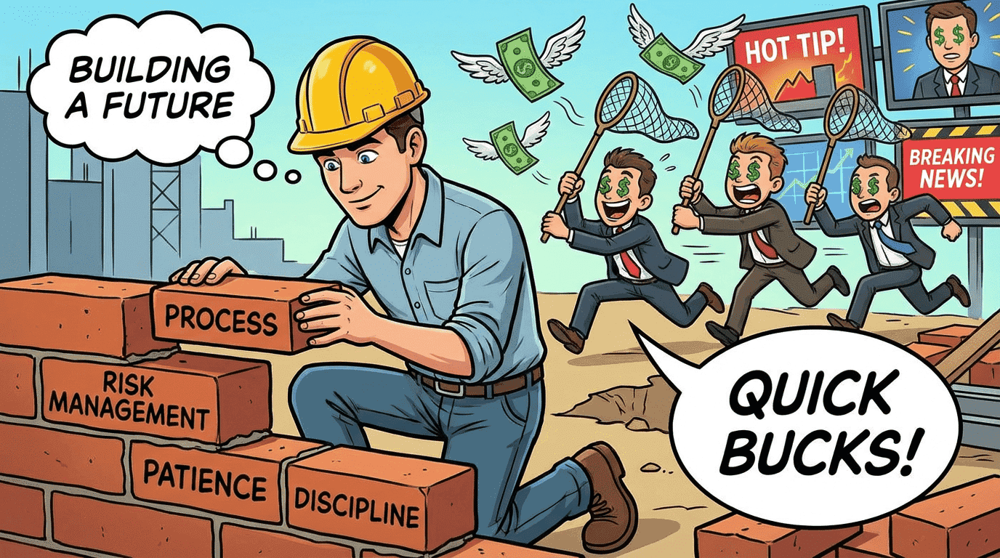

The process remains the same…
- Higher TF regime
- Levels
- Setup
- Risk locked down
So it's actually a pretty good time to go back to the foundations... fill in any gaps and remind ourselves what really matters in this market.
THE 12-WEEK TRADING FOUNDATION

So for Q2, I'm starting a new webinar series in partnership with Pepperstone: The 12-Week Trading Foundation
Not "what is a candlestick" foundation (obviously...) but the core skills that support all trading approaches.
- April: Understanding the chart
- May: Managing the trade
- June: Avoiding mistakes that undermine trading performance
Each month, we'll strip things back to foundations and layer them back up again properly.
(This is a tactic I often use when developing traders ask me for help with growth.)
Starting with Week 1, answering the common multi-timeframe analysis question:
How Traders Use Multiple Timeframes to Read the Market
Your recording - How Traders Use Multiple Timeframes to Read the Market
Using different timeframes to understand the bigger picture and build a structured view of the market.
Think top-down process, but with a flavour of what's worth doing and what's just noise.
Register once and you're in for the full 12 weeks. Plus you get the recordings if you can't make it.